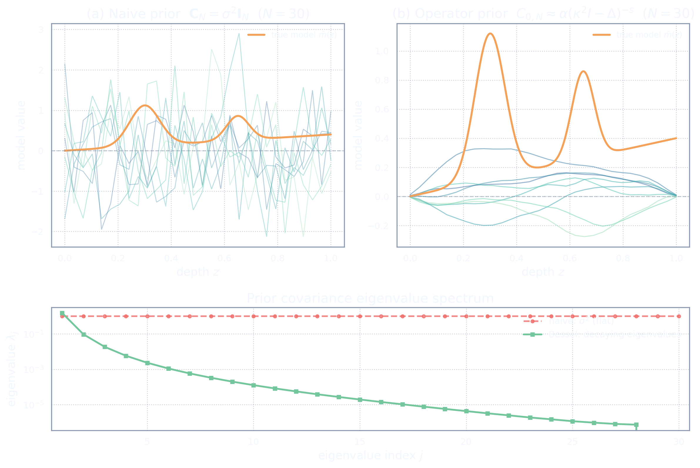
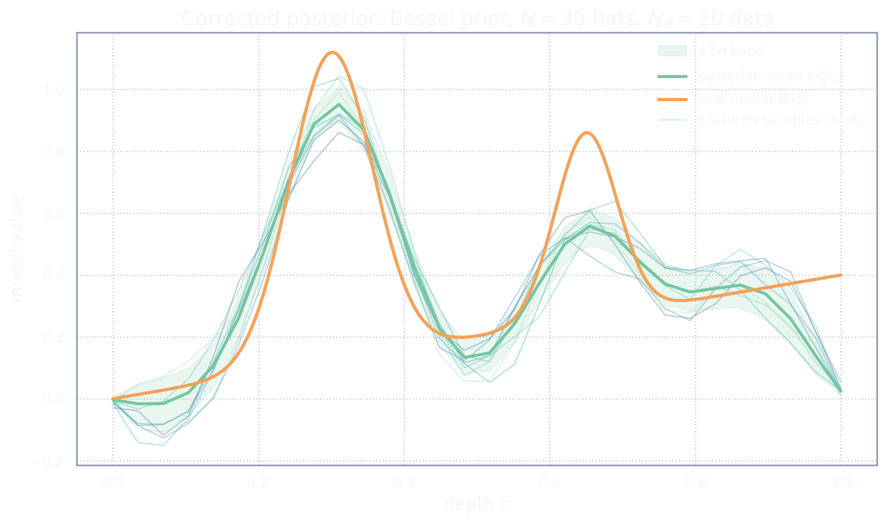
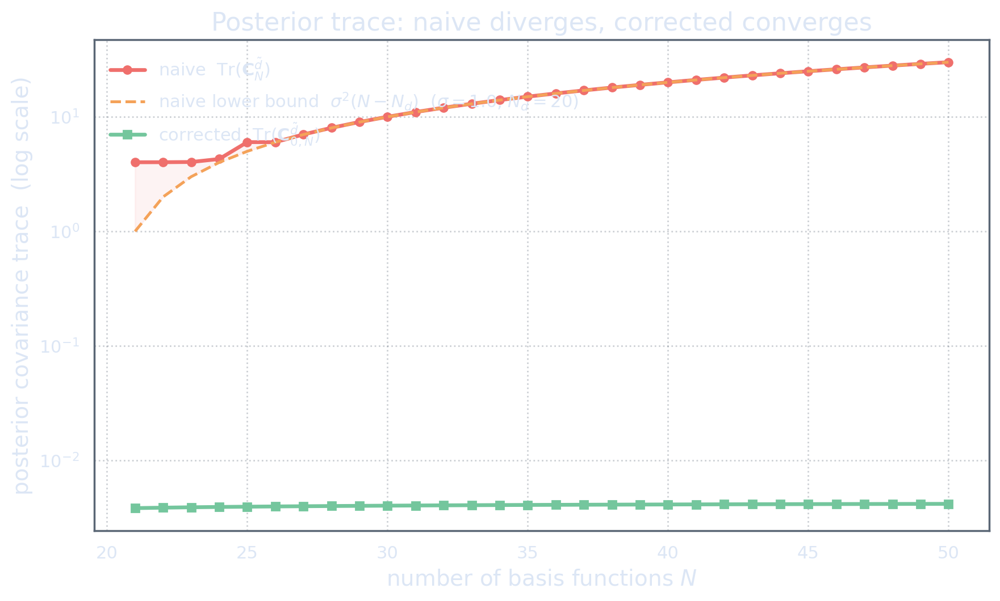

The Repair: Corrected Computation on the Same Toy Problem
Act VI gave us the ingredients: a trace-class covariance operator, the Hilbert adjoint, and the function-space posterior. Now we put them to work on the same toy problem from Acts I and II.
Same domain \(\Omega = [0,1]\), same Gaussian kernels, same \(K = 20\) data, same hat basis, same forward matrix \(\Gb\). The physical forward and data setup is unchanged. What changes is the Bayesian formulation: the prior is now a function-space-consistent covariance operator rather than a per-resolution diagonal matrix. We think first, discretize later.
This is not a new physical problem. It is the same forward and data setup, placed in a function-space-consistent Bayesian formulation. The broken machine is rebuilt with the correct parts.
F7a — The corrected prior
In Act I, the prior was \(\mathbf{C}_N = \sigma^2 \mathbf{I}_N\) — a diagonal matrix invented at each resolution. Now the prior comes from a covariance operator: \[ C_0 = \alpha(\kappa^2 I - \Delta)^{-s}, \] discretized on the same hat basis: \(C_{0,N} \approx C_0\).
We are not inventing a covariance matrix anymore. We are discretizing a covariance operator. The eigenvalue spectrum tells the difference immediately: the naive spectrum is flat (\(\sigma^2\) in every direction), while the Bessel spectrum decays — ensuring \(\Tr(C_0) < \infty\).

F7b — The corrected posterior samples
In Act II (F2b), the posterior mean looked plausible but the samples fluctuated wildly. Now we draw samples from the corrected posterior \(m_N^{(s)} \sim \mu_N^{\obs}\) using the Bessel prior.
Same data, same \(N = 30\) hats, same true model. But the posterior cloud has stopped screaming. The mean still tracks the truth; the samples no longer oscillate wildly; the \(\pm 1\sigma\) band is narrow and controlled.

The posterior mean may look similar to the naive case. The posterior measure does not. The samples tell the story that the mean hides.
F7c — Corrected refinement: the uncertainty settles
In Act II (F2e), the refinement slider showed the naive posterior's uncertainty band inflating as \(N\) increased. Now we run the same experiment with the corrected prior.
As \(N\) increases, the uncertainty should stabilize rather than inflate. Refinement no longer opens new trapdoors of variance. It reveals finer pieces of the same probability measure.
Refinement no longer opens new trapdoors of variance. It reveals finer pieces of the same probability measure.
F7d — Trace comparison: naive versus corrected
The mathematical verdict in one plot. For the naive prior, \(\Tr(\mathbf{C}_N^{\obs}) \geq \sigma^2(N - K)\) — the total posterior variance grows linearly with \(N\).
For the corrected prior, \(0 \leq C^{\obs} \leq C_0\), so \(\Tr(C^{\obs}) \leq \Tr(C_0) < \infty\). The total posterior variance is bounded, no matter how fine the mesh.
This is the heart of the cure: finite trace \(\Rightarrow\) controlled uncertainty.

Let \(C_0\) be a positive symmetric trace-class covariance operator on \(\M\), and let \(G:\M\to\D\) be a bounded linear map into the finite-dimensional data space \(\D=\R^K\). Then the posterior covariance \(C^{\obs} = C_0 - C_0 G^{\adj} (G C_0 G^{\adj} + \Cd)^{-1} G C_0\) is positive and trace class, with \(\Tr(C^{\obs}) \leq \Tr(C_0) < \infty\).
F7e — From operator to matrix: the translation table
Every discrete object has a continuous parent. The discretization inherits meaning from the continuous formulation, not the reverse. The table below maps each function-space object to its discrete representation.
| Function-space object | Discrete representation | Naive shortcut (wrong) |
|---|---|---|
| \(m \in \M\) | \(\mathbf{u} \in \R^N\) represents \(m_N = \sum_j u_j \phi_j\) | coefficients are the model |
| \(G: \M \to \D\) | \(G_{ij} = [G\phi_j]_i\) | same matrix — but wrong adjoint |
| \(G^{\adj}: \D \to \M\) | \(G^{\adj}_{\mathrm{disc}} = M^{-1} G^{\T} W_D\) | \(G^{\T}\) (ignores geometry) |
| \(C_0: \M \to \M\) (covariance operator) | \(C_{0,N}\) (operator matrix in basis) | \(\sigma^2 I_N\) (invents covariance) |
| \(\Tr(C_0) < \infty\) | \(\Tr(C_{0,N}) \to \Tr(C_0)\) | \(\Tr(\sigma^2 I_N) = \sigma^2 N \to \infty\) |
| \(\post = \N(m^{\obs}, C^{\obs})\) | \(\post_N \approx \post\) (converges) | \(\post_N\) diverges with \(N\) |
The corrected workflow
The naive workflow was:
mesh \(\Rightarrow\) basis \(\Rightarrow\) coefficient vector \(\Rightarrow\) matrix prior \(\Rightarrow\) posterior.
The corrected workflow is:
model space \(\Rightarrow\) data space \(\Rightarrow\) forward map \(\Rightarrow\) noise model \(\Rightarrow\) prior measure \(\Rightarrow\) posterior \(\Rightarrow\) discretization.
More explicitly:
- Choose the model space \(\M\).
- Choose the data space \(\D\).
- Define the forward map \(G:\M\to\D\).
- Specify the noise model \(\noise\sim\N(0,\Cd)\).
- Choose the prior measure \(\prior=\N(m_0,C_0)\) on \(\M\).
- Define the posterior measure \(\post\) on \(\M\).
- Choose approximation spaces \(\M_N\subset\M\).
- Discretize \(G\), \(G^{\adj}\), \(C_0\), and the posterior consistently.
This order protects the problem from accidental modelling choices.
The cure is not a cleverer matrix. The cure is choosing the mathematical object first and discretizing it second.